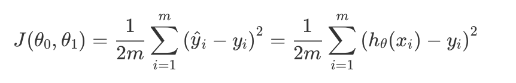
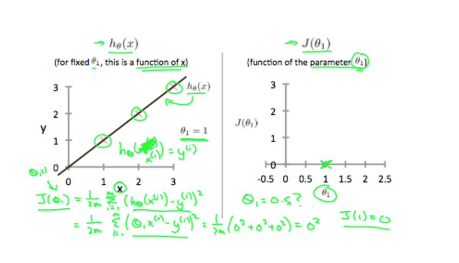
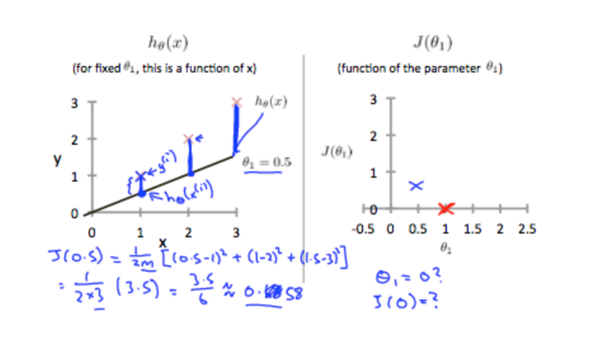
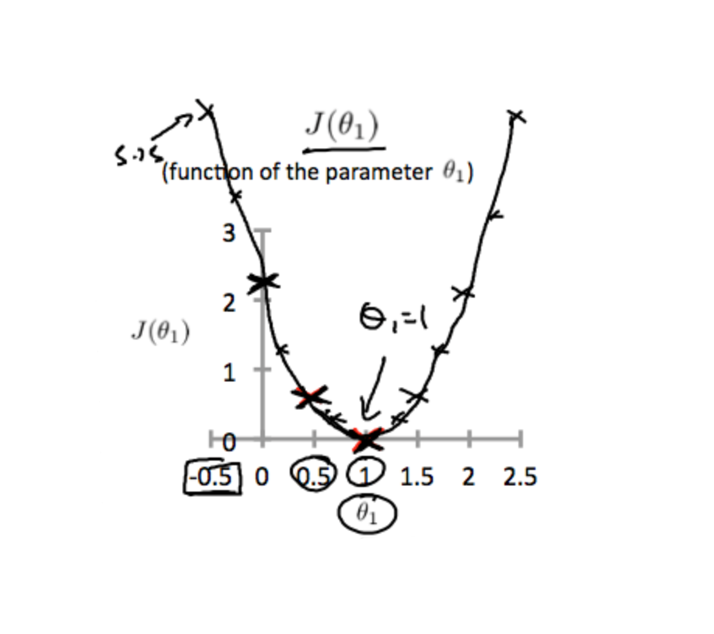
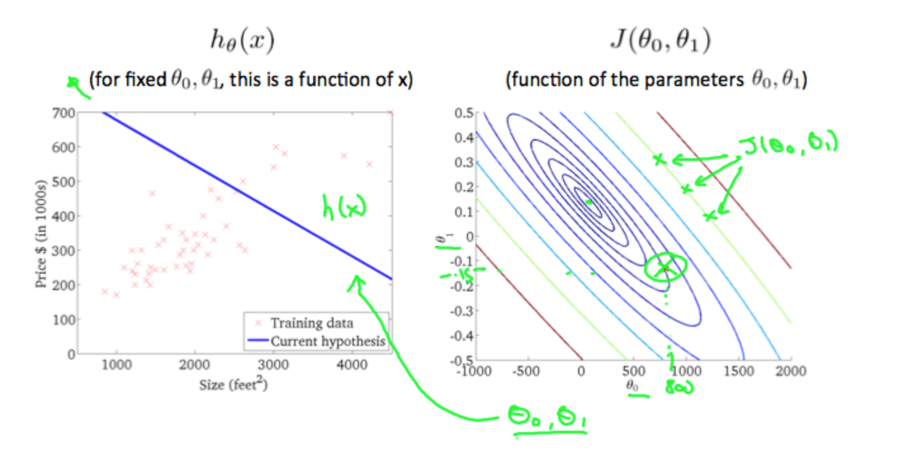
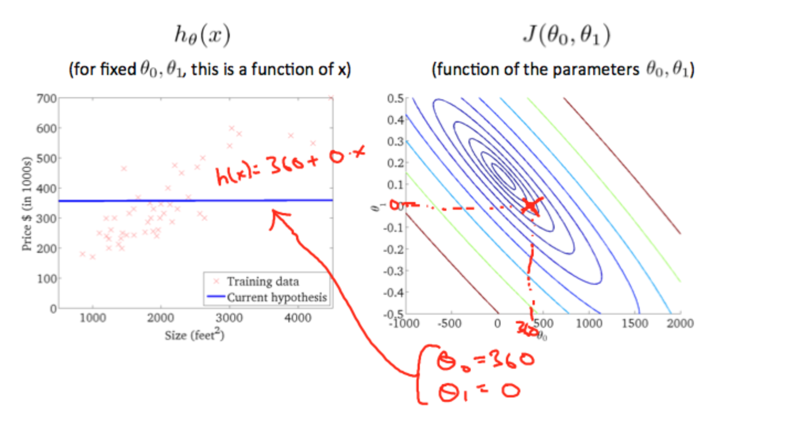
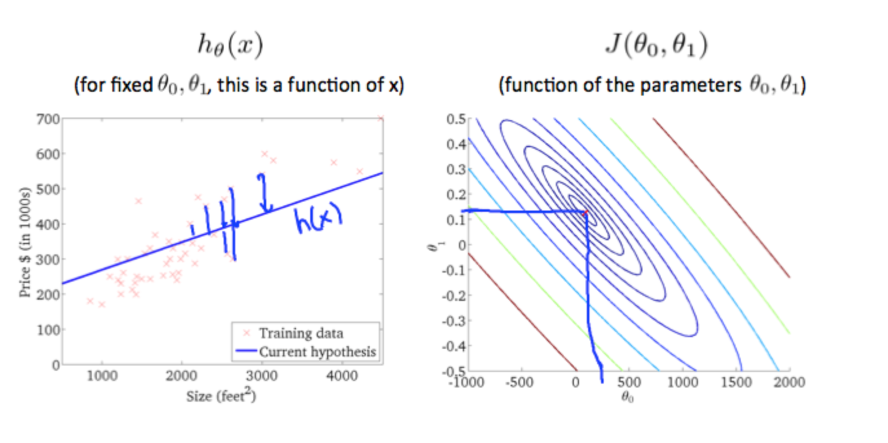

Model Representation
To establish notation for future use, we’ll use x(i) to denote the “input” variables (living area in this example), also called input features, and y(i) to denote the “output” or target variable that we are trying to predict (price). A pair (x(i),y(i)); i = 1,...,m is called a training example, and the dataset that we’ll be using to learn—a list of m training examples (x(i),y(i));i=1,...,m—is called a training set. Note that the superscript “(i)” in the notation is simply an index into the training set, and has nothing to do with exponentiation. We will also use X to denote the space of input values, and Y to denote the space of output values. In this example, X = Y = ℝ.
To describe the supervised learning problem slightly more formally, our goal is, given a training set, to learn a function h : X → Y so that h(x) is a “good” predictor for the corresponding value of y. For historical reasons, this function h is called a hypothesis. Seen pictorially, the process is therefore like this:

Cost Function
We can measure the accuracy of our hypothesis function by using a cost function. This takes an average difference (actually a fancier version of an average) of all the results of the hypothesis with inputs from x's and the actual output y's.

This function is otherwise called the "Squared error function", or "Mean squared error". The mean is halved (1/2) as a convenience for the computation of the gradient descent, as the derivative term of the square function will cancel out the 1/2 term.
Cost Function - Intuition I
If we try to think of it in visual terms, our training data set is scattered on the x-y plane. We are trying to make a straight line (defined by hθ(x) which passes through these scattered data points.
Our objective is to get the best possible line. The best possible line will be such so that the average squared vertical distances of the scattered points from the line will be the least. Ideally, the line should pass through all the points of our training data set. In such a case, the value of J(θ0,θ1) will be 0. The following example shows the ideal situation where we have a cost function of 0.

When θ1 = 1, we get a slope of 1 which goes through every single data point in our model. Conversely, when θ1 = 0.5, we see the vertical distance from our fit to the data points increase.

This increases our cost function to 0.58. Plotting several other points yields to the following graph:

Thus as a goal, we should try to minimize the cost function. In this case, θ1 = 1 is our global minimum.
Cost Function - Intuition II
A contour plot is a graph that contains many contour lines. A contour line of a two variable function has a constant value at all points of the same line. An example of such a graph is the one to the right below.

Taking any color and going along the 'circle', one would expect to get the same value of the cost function. For example, the three green points found on the green line above have the same value for J(θ0,θ1) and as a result, they are found along the same line. The circled x displays the value of the cost function for the graph on the left when θ0 = 800 and θ1 = -0.15. Taking another h(x) and plotting its contour plot, one gets the following graphs:

When θ0 = 360 and θ1 = 0, the value of J(θ0,θ1) in the contour plot gets closer to the center thus reducing the cost function error. Now giving our hypothesis function a slightly positive slope results in a better fit of the data.

The graph above minimizes the cost function as much as possible and consequently, the result of θ1 and θ0 tend to be around 0.12 and 250 respectively. Plotting those values on our graph to the right seems to put our point in the center of the inner most 'circle'.